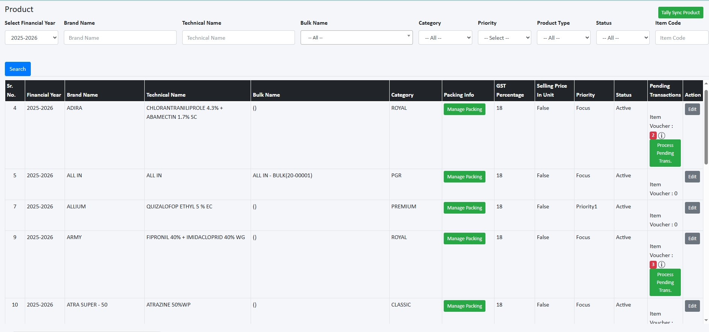
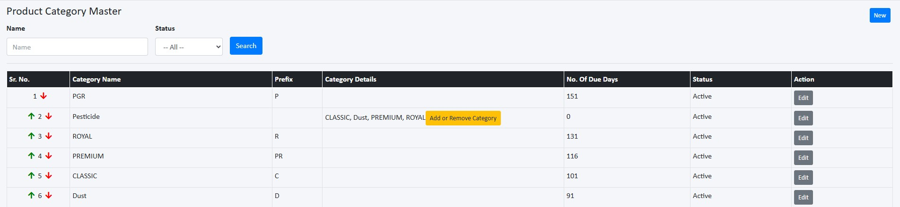
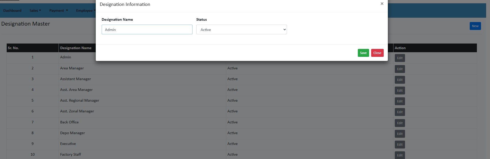
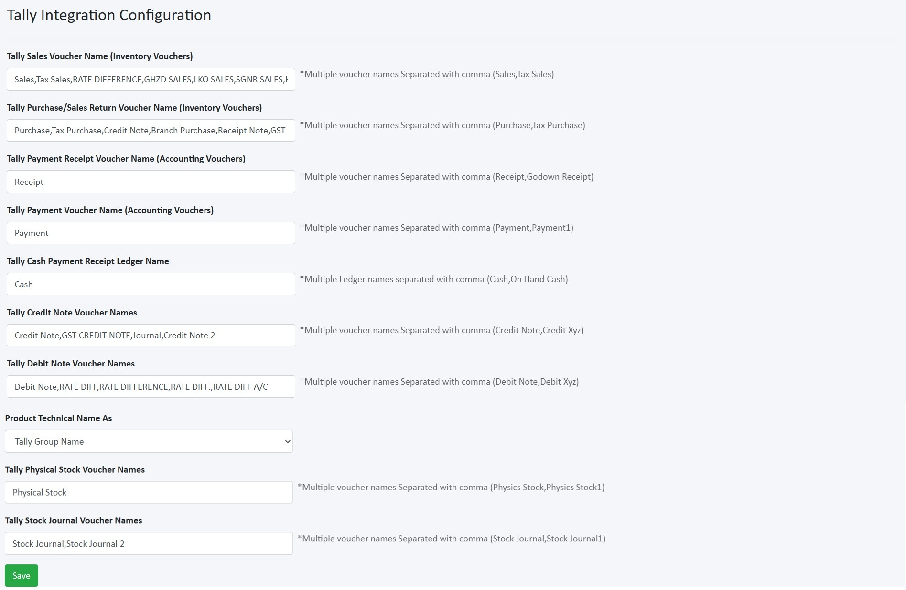

Masters
Sales Person Master
The Sales Person Master module is used to manage all sales personnel details, including their roles, contact information, TA/DA settings, depo access, and state access.
1. Sales Person List
- Navigate to Masters → Sales Person Master to view the list of all sales persons.
- You can search, filter, and manage sales persons from this screen.
- Use the Search bar to quickly find a specific sales person by entering their name, code, or other details.
-
Screenshot – Sales Person List

2. Adding or Editing a Sales Person
- Click New to add a new sales person, or Edit to update an existing one.
- Fill in required fields such as User Type, Code, Full Name, Mobile, HQ, Joining Date, Designation, Role Right, Reporting To, TA/DA Slab, Depo, Status, and Web Login Access.
- Click Save to create or update the sales person.
- After saving, you can configure additional settings like TA/DA info, depo access, and state access.
-
Screenshot – Adding New Sales Person
Note: The Role Right field determines the permissions and access levels for the sales person within the system.
3. Configuring TA/DA Info
- In the Sales Person Master list, click the TA/DA Info icon for a sales person to configure their travel and daily allowance details.
- Select Slab from the list, distance ranges, DA amounts, and other related fields.
- Tick allowed bill heads (Petrol, Accommodation, Travel, Food, Courier, Misc) for Expense.
- Click Save to apply the changes.
-
Screenshot – TA/DA Info
4. Assigning Depo Access
- Click the Depo Access icon to assign which depots the sales person can access.
- Select the relevant depots and save.
-
Screenshot – Depo Access
5. Setting State Access
- Click the State Access icon to manage which states the sales person can operate in.
- Check the boxes for the states to grant access, then click Save.
-
Screenshot – State Access
Tip: Use the Reset Password icon in the Sales Person Master list to reset a user's login password.
Slab Master
The Slab Master is used to define different slabs for employees or roles in the system. Each slab represents a category (e.g., Sales Officer, Area Manager) that determines the travel and allowance rules.
Adding a New Slab
- Navigate to Masters → Slab Master from the main menu.
- Click New to open the Slab Information form.
- Fill in the required fields:
- Slab Name – Name of the slab (e.g., Sales Officer, Area Manager).
- Status – Select Active to enable or Inactive to disable.
-
Screenshot – Adding New Slab
- Click Save to add the slab.
- Click Edit to update slab details.
Manage Slab Transactions
Defines the TA/DA allowances for each slab based on travel conditions, distances, and tour types.
- From Slab Master, click the Setting icon in the TA/DA Info column for the desired slab.
- In the Slab TA/DA Information popup window:
- Tour Type: Select from tour type such as In Headquarter, Out of Headquarter, Same Day Return, Work From Home, etc.
- From K.M. / To K.M.: Define the distance range.
- D.A. Amount : Enter Daily Allowance amount for this slab and travel range.
- Max Bill D.A. Amount: Maximum Daily Allowance claim limit.
- Hour Req: Minimum hours required for allowance eligibility.
- Consider D.A. In By Other?: Check if this allowance can be merged with another claim.
- Click Save to store the slab transaction details.
-
Screenshot – Slab TA/DA Management
Party Master
Party Master
The Party Master module allows you to manage all dealer/party details, sync them with Tally, and track pending transactions. It also provides mapping features for Salesperson and Party allocation.
1. Party Master
- Go to Masters → Party Master from the main menu.
- Search parties using filters like Party Name, Party Code, State, District, Mobile, GST, Status, etc.
- Click Edit to update party details.
-
Screenshot – Party Master
2. Tally Pending Transactions
The Tally Pending Transactions shows all transactions that were not synced properly from Tally into the CRM.
- Check the Tally Pending Transactions column to view pending vouchers and you will sell count.
- Types of pending transactions:
- Accounting Voucher – Sales or purchase entries not synced properly.
- Item Voucher – Mismatched or missing item details.
- Outstanding Bills – Bills not cleared or mismatched with Tally.
-
Screenshot – Tally Pending Transactions
3. Process Pending Transactions
- Click the Accounting Voucher button for the selected party.
- A Popup shows TallyId, Voucher Type, Voucher No, Voucher Date, Reference No/Date, Processing TimeStamp and Processing Remarks.
- Processing remarks:
- Voucher type not found in tally configuration – The voucher type used in CRM is not mapped in Tally..
- Solution – Update voucher type mapping in Tally and reprocess the transaction.
- Party not found – Party is not synced between CRM and Tally.
- Solution – Use Tally Party Sync option to validate and sync missing parties.
- Click Process Pending to process the pending accounting voucher.
-
Screenshot – Accounting Voucher
- For Item Voucher, click the button to view and process pending item vouchers.
- Processing remarks:
- Voucher type not found in tally configuration – The voucher type used in CRM is not mapped in Tally..
- Solution – Update voucher type mapping in Tally and reprocess the transaction.
- Click Process Pending to process the pending accounting voucher.
-
Screenshot – Item Voucher
- For Outstanding Bills, click the button to view all pending bills for the party.
- Outstanding Bills Details screen shows bill date, reference, opening and pending amounts, due date, bill type, and processing remarks.
- Processing remarks:
- Product not found – The item in the bill is missing in product master.
- Solution – Add the missing item in the Product Master and reprocess the transaction.
-
Screenshot – Outstanding Bills Details
4. Tally Sync Party
- Click the Tally Sync Party button to open the Tally Party Sync screen.
- Use search filters (Name, Code, State, GST, Contact) to find a party. Click Validate to check for errors or missing details.
- Update missing party details such as address, contact information, GST, PAN, and status.
- Select the parties you want → click Sync Selected Party. After syncing, the party appears in Party Master. Any pending vouchers/bills from Tally for that party will be visible as counters.
-
Screenshot – Tally Sync Party
Party Agent Mapping Master
The Party Agent Mapping Master module allows you to map salespersons to specific parties, enabling better tracking and management of party relationships.
1. Accessing Party Agent Mapping Master
- Navigate to Masters → Party Master → Party Agent Mapping Master from the main menu.
- The screen displays a list of existing mappings, including Sales Person, Party Name, address, and Financial Year.
- Use the search bar to filter by Sales Person, Party Name, State, or Financial Year.
- Click Edit button to udpate Sales person mapping from the dropdown list.
-
Screenshot – Party Agent Mapping Master
-
Screenshot – Sales Person Mapping
2.Mapping Salesperson to Party
- At the top‑right, click SalesPersonWise Mapping button to open the popup
- Select Financial Year, State and Sales Person from the dropdown list.
- Click Search to load parties.
- Use the green toggle at the end of each row:
- Turn ON to map the party to the selected Sales Person.
- Turn OFF to unmap.
- Click Save to create the mapping.
-
Screenshot – Party Agent Mapping
3.Salesperson to Salesperson Bulking Mapping
- In the Party Agent Mapping Master, click SalesPerson to SalesPerson Bulk Mapping button to open the mapping form.
- Select Financial Year, State and From Sales Person and To Sales Person then click Search.
- Toggle the parties to move/copy and Save.
-
Screenshot – Salesperson Mapping

4.Financial Year wise Bulk Mapping
- In the Party Agent Mapping Master, click FinancialYearWise Bulk Mapping button to open the mapping form.
- Select State, From Financial Year and To Financial Year then click Search.
- Toggle the parties to move/copy and Save.
-
Screenshot – Financial Year Mapping
Depo Master
The Depo Master module is used to manage depo information including location, management assignment, and depo related expenses. From here, you can add, edit, and maintain details for all depo in the system.
Adding a New Depo
- Navigate to Masters → Depo Master from the main menu.
- Click New to open the Depo Information form.
- Fill in the required fields:
- Depo Code – Unique identifier for the depo.
- Depo Name – The name of the depo.
- State, District, Taluka, City – Select from the dropdowns.
- Manage By – Assign a sale person from the list.
- Status – Active or Inactive.
- Tally Company Code & Tally Godown Name – For Tally ERP mapping.
-
Screenshot – Adding New Depo
- Click Save to add the depo.
- Click Edit to update depo details.
Managing Depo Expenses
- In the Depo Master list, click Manage under the “Manage Expense” column.
- In the Expense Information window:
- Select the Financial Year.
- Enter the Monthly Expense value.
- Click Save to add or update the record.
- Use Edit to modify existing expense records.
-
Screenshot – Depo Expense Management
Viewing Depo List
- Navigate to Masters → Depo Master from the main menu.
- Use the Search Filters at the top to locate specific depots by Code, Name, State, District, Status, or Expense details.
- Click Search to View the list of all depo.
- All existing depo will be listed with their details.
-
Screenshot – Depo Master List
Sales Product Master
Sales Product Master
The Tally Sync Product module allows you to sync and update product details from Tally ERP into your system. This ensures that your product list stays synchronized with your accounting data in Tally.
1. Accessing Tally Sync Product
- Navigate to Masters → Sales Product Master from the main menu.
- Click the green Tally Sync Product button at the top right of the Product Master screen.
- The Tally Product Item Sync screen will open, showing products available for sync from Tally.
- Use search filters to quickly locate products by brand name, technical name, item name and category.
-
Screenshot – Tally Sync Product
- For each product, fill in or update required fields such as: Technical Name, Brand, Category, GST, Packing, Shipper Type
- If any required field is missing (e.g., Pack Size not found), a red status message will appear.
- Update the missing fields before proceeding.
- Validating Product: Click the Validate button to check for errors or missing data.
- Once all required fields are filled and validated, select the products you want to sync by checking the Sync Data? box.
- Click Sync Selected Products to import and update these products in your Product Master list.
- After syncing, products will appear in your Product Master list.
2. Product Master & Pending Transactions
- Use filter options (Financial Year, Brand, Technical Name, Category, etc.) to search for products and click Search.
- The table displays product details such as Brand, Technical Name, Category, GST %, Price, Status, and Pending Transactions.
- Click Edit to update product details.
-
Screenshot – Product Master
 - The Pending Transactions column shows the number of item vouchers waiting to be processed for each product.
- Click Process Pending Transactions to resolve these transactions.
- This will open the Item Voucher Details screen for this item, including TallyId, Voucher Detail, Voucher Ref, Item, Item Detail, Tally Godown/Depo, Processing TimeStamp, and Processing Remarks.
- Use this screen to identify and resolve issues with item vouchers, such as depo not found or Voucher type not found in tally configuration.
-
Screenshot – Item Voucher Details
3. Manage Packing
- In the Product Master list, click the Manage Packing icon for a product to open the packing management screen.
- Here you can add or update packing details such as Packing Value, Measure, Packing Name, No of Unit in Shipper, Shipper Size, Shipper Type, Gross Weight, and Master Packing status.
- Click Save to apply the changes.
-
Screenshot – Manage Packing
Product Category Master
The Product Category Master screen allows you to create and manage product categories. Categories help organize your products for better reporting, filtering, and management.
Adding a New Product Category
- Navigate to Masters → Sales Product Master → Product Category Master from the main menu.
- Click New to open the Product Category Information form.
- Fill in the required fields:
- Select the Category Type Category from the dropdown menu.
- Category Name – Full name of the product category.
- Set the No. of Due Days if applicable.
- Status – Select Active to enable or Inactive to disable.
-
Screenshot – Adding New Product Category
- Click Save to add the product category.
- Click Edit to update category details.
Mapping Product Category
- Navigate to Masters → Sales Product Master → Product Category Master from the main menu.
- Click New to open the Product Category Information form.
- Fill in the required fields:
- Select the Category TypeCategory Tag Mapping from the dropdown menu.
- Name – Name of the category mapping.
- Status – Select Active to enable or Inactive to disable.
- Click Save to add.
-
Screenshot – Mapping Product Category
- In the Product Category Master list, you can view all existing categories.
- In the Product Category Master,Click Add or Remove button.
- select the category to map to this category from the dropdown.
- Click Add to apply the mapping.
- To remove a mapping, select the category and click Remove.
-
Screenshot – Product Category List
 -
Screenshot – Product Category Mapping
Product Financial Year Mapping
The Product Financial Year Mapping module allows you to manage which products are active in each financial year. You can copy product mappings from a previous year, fetch data, and enable or disable products for the selected financial year.
Copying Product Mappings from Previous Year
- Navigate to Masters → Sales Product Master → Product Financial Year Mapping.
- Copy Product from Previous Financial Year: Select a source financial year from the "Copy product from Financial Year" dropdown, then click Fetch Data to bring previous year products mapping into the current financial year.
-
Screenshot – Copying Product Mappings
Enabling or Disabling Products
- In the Product Financial Year Mapping list, you can view all products mapped to financial years.
- Use the search filters to find specific mappings by Financial Year.
- Product Category - Assign category from the product category dropdown.
- Status Toggle - Enable/disable the product for the selected year.
-
Save Changes:
- Click Save Save mapping for each product individually.
- Click Save All Save all changes in one click. -
Screenshot – Enabling or Disabling Products
Product Item Financial Year Mapping
The Product Item Financial Year Mapping module is used to manage which product items (with specific packing size) are active in a selected financial year. This ensures that only valid items are available for sales and reporting in that year.
Mapping Product Items to Financial Years
- Navigate to Masters → Sales Product Master → Product Item Financial Year Mapping.
- Select the Financial Year from the dropdown.
- Select the Product from the list.
- Click Search to load its items.
- Enable or disable items using the Status Toggle.
- Click Save All to apply changes for all items.
-
Screenshot – Product Item Financial Year Mapping
Product Item Price Master
This module is used to define the selling prices of product items
across states and price types (RPL, NCR, Advance).
These prices are used in the Sales Order process.
Adding or Updating Product Item Prices
- Navigate to Masters → Sales Product Master → Product Item Price Master.
- Select the Financial Year and Click Get Data.
- Locate the product item row in the Product Item list.
- Enter numeric values for RPL, NCR, and/or Advance.
- Leave as
0if not applicable. - After editing all rows, click Final Save.
-
Screenshot – Product Item Price Lists

Uploading Prices via Excel
- Click Upload File to open the upload popup.
- Select the Financial Year for which you want to upload prices.
- Click Download Sample File to get the current template with correct columns.
- Fill the Excel file:
- Do not change column headers.
- Enter numeric values only (no currency symbols).
- Keep blank/0 where not applicable.
- Choose the file and click Upload ProductItem Price Data.
- Wait for the confirmation message. The grid will reflect uploaded values.
- Review changes in the list and Final Save.
-
Screenshot – Upload Product Item Price

Product Collection Type
The Product Collection Type module allows you to define and manage product groupings for a selected financial year. These collections can be used for AOP Top Product Plans or other reporting and planning purposes.
1.Create a New Collection Type
- Navigate to Masters → Sales Product Master → Product Collection Type.
- Click New to open the collection type form.
- Fill in the following details:
- Financial Year – Select from the dropdown.
- Collection Type Name – Enter a descriptive name (e.g., Top 25).
- Is for AOP Top Product Plan? – Tick if applicable.
- Status – Choose Active or Inactive.
- Click Save to create the collection.
-
Screenshot – Adding New Collection Type
2.Edit or Update a Collection
- In the Product Collection Type list, click Edit for the desired collection.
- Update any fields as needed, such as Collection Type Name or Status.
- Click Update to apply changes.
-
Screenshot – Product Collection Type Lists
3.Manage Product Information
- In the Product Collection Type list, click on the Manage Product button for the desired collection.
- Click the Add Product button to add product to desired collection type.
- Click the Remove button to remover product.
-
Screenshot – Manage Product Information
4.Manage State Access
- In the Product Collection Type list, click on the State Icon for desired collection.
- Select the states where the collection should be active by ticking the checkboxes.
- Click Save to apply the state access.
-
Screenshot – Manage State Access
Raw Material Master
The Raw Material Master module is used to manage and maintain details of raw materials that are used in production or formulations. This ensures proper tracking, categorization, and availability of raw materials for business operations.
Adding a New Raw Material
- Navigate to Masters → Sales Product Master → Raw Material Master.
- Click New button to open the raw material form.
- Enter the Raw Material Name.
- Raw Material Type: Select the type of material (e.g., Solvent, Tech, Emf, etc.).
- Raw Material Code: Unique system-generated or manually assigned code for the raw material.
- Is Purity? – Choose Yes or No depending on whether purity applies to the material.
- Status – Set the material as Active or Inactive.
- Click Save to add the raw material.
-
Screenshot – Adding New Raw Material

Viewing Raw Materials
- In the Raw Material Master list, you can view all raw materials.
- Use the search filters to find specific raw materials by Name or Status.
- Click Edit to update existing raw materials.
-
Screenshot – Raw Material List
Bulk Product Master
The Bulk Product Master module is used to create and manage bulk products by defining their type, code, and raw materials used. This ensures accurate product mapping and integration with Raw Material Master.
Adding a New Bulk Product
- Navigate to Masters → Sales Product Master → Bulk Product Master.
- Click New to open the bulk product Information.
- Fill in details such as Product Name, Product Type, and Code.
- Select Status (Active/Inactive) and save.
-
Screenshot – Adding New Bulk Product
Viewing Bulk Products
- In the Bulk Product Master list, you can view all bulk products.
- Use the search filters to find specific bulk products by Name or Status.
- Edit or update bulk product details as needed from the Action column.
-
Screenshot – Bulk Product List
- From the bulk product list, click Manage Raw Material to assign raw materials.
- In the Manage Raw Material popup:
- Select the Raw Material from the dropdown.
- Tick the checkbox raw material want to add in bulk the product.
- Click Save to include this raw material in the bulk product.
-
Screenshot – Manage Raw Material
AOP Product Mapping
The AOP (Annual Operating Plan) Product Mapping module is used to map products to specific states for a selected financial year. This ensures that only relevant products are available in the selected regions.
Mapping AOP Products
- Navigate to Masters → Sales Product Master → AOP Product Mapping.
- Select the Financial Year from the dropdown.
- Copy Products from Previous Year: Allows copying product mapping from a previous financial year to the selected year for quick setup.
- Tick States: Each product is listed with checkboxes for all states. Tick the boxes to enable the product for specific states. - Example: Tick Gujarat, Bihar, Maharashtra for a product if it should be available only in those states. - Leave unticked if the product should not be mapped to that state.
- Save Mapping: - click "Save All" to save all mappings in one go.
-
Screenshot – AOP Product Mapping
Designation Master
The Designation Master is used to create and manage employee designations within the system. Designations define job titles or roles that can be assigned to employees for reporting and organizational structure.
Adding a New Designation
- Navigate to Masters → Designation Master from the main menu.
- Click New to open the Designation Information form.
- Fill in the required fields:
- Designation Name – Full name of the designation.
- Status – Select Active to enable or Inactive to disable.
-
Screenshot – Adding New Designation

- Click Save to add the designation.
- Click Edit to update designation details.
Others Master
Country Master
Manage the countries available in the system.
- Click New to add a new country.
- Enter the country name and set status (Active/Inactive).
- Click Save to store the record.
- Click Edit to modify existing records.
State Master
Manage the all available states.
- Click New to add a new state.
- Select the parent country and enter the state name.
- Set status (Active/Inactive) and click Save.
- Use Edit to modify existing states.
District Master
Manage the districts under each state.
- Click New to add a new district.
- Select the parent state and enter the district name.
- Set status (Active/Inactive) and click Save.
- Edit existing districts using the Edit button.
Tehsil Master
Manage the tehsils under each district.
- Click New to add a new tehsil.
- Select the parent district and enter the tehsil name.
- Set status (Active/Inactive) and click Save.
- Edit existing tehsils using the Edit button.
City Master
Manage the cities under each tehsil.
- Click New to add a new city.
- Select the parent state, district, and tehsil.
- Enter the city name and set status (Active/Inactive).
- Click Save to store the record.
- Edit existing cities using the Edit button.
Bill Setting Master
The Bill Setting Master module is used to configure expense bill upload rules for employees. Administrators can define how many days are allowed for expense bill uploads based on designation, and also exclude employees from this limit if required.
Setting Bill Upload Day Limits
Each designation can have a Day Limit. This defines how many days are permitted for bills to be submitted or processed.
- Find the Designation in the list (e.g., Zonal Manager).
- Enter the allowed number of days in the Day Limit field.
- 0 → No restriction (can upload anytime).
- 10 → Bills must be uploaded within 10 days.
- Click Save to apply the limit for that designation.
-
Screenshot – Bill Setting Master
Excluding Employees
You can exclude specific employees from the bill settings of a designation.
- Click the Select Exclude Employee button in the row of the relevant designation.
- Select State From the dropdown list.
- Choose the employees you want to exclude.
- Click Save to update the exclusion list.
-
Screenshot – Exclude Employee
Vehicle Master
The Vehicle Master module is designed to help you manage all vehicles used in your organization. You can add new vehicles, assign them to employees, track their status, and update important details like mileage and registration.
Adding a New Vehicle
- Navigate to Masters → Vehicle Master from the main menu.
- Click New to open the Vehicle Information form.
- Fill in the required fields:
- Vehical Type – Select the type of vehicle from the dropdown (e.g., Diesel, Petrol, Electric, CNG).
- Vehicle Name – Enter the make/model of the vehicle (e.g., TATA TIAGO).
- Vehicle Number – Enter the official registration number(e.g., GJ-01-HW-1298).
- Assigned Person – Choose the employee who will be responsible for this vehicle from the dropdown list.
- Vehicle Mileage – Enter the mileage of the vehicle in km/l.
- Status: Set the vehicle as Active (in use) or Inactive (not in use).
-
Screenshot – Adding New Vehicle
-
Screenshot – Vehicle Master List
- Click Save to add the vehicle.
- Click Edit to update vehicle details.
Leave Type Master
The Leave Type Master module is used to manage different types of leaves available for employees. From here, you can add, edit, and maintain leave types in the application.
Adding a New Leave Type
- Navigate to Masters → Leave Type Master from the main menu.
- Click New to open the Leave Type Information form.
- Fill in the required fields:
- Leave Type – Name of the leave (e.g., Sick Leave, Festivals).
- Leave Code – Short code for the leave (e.g., SL, CL).
- Leave Color Code – Select a color for display in the leave calendar.
- Is Paid? – Tick if the leave is paid or unpaid.
- Status – Select Active or Inactive.
-
Screenshot – Adding New Leave Type
- Click Save to add the leave type.
- Click Edit to update leave type details.
Holiday Master
The Holiday Master module is used to define and manage organization-wide holidays for different states and countries. These holidays are integrated into attendance, leave, and payroll systems to ensure accurate record-keeping.
Adding a New Holiday
- Navigate to Masters → Holiday Master from the main menu.
- Click New to open the Holiday Information form.
- Fill in the required fields:
- Select Country – Choose the country for which the holiday applies.
- Select State – Choose the state within the selected country.
- Holiday Date – Pick the date of the holiday from the calendar.
- Holiday Name – Enter the holiday’s name (e.g., Diwali, Independence Day).
- Holiday Type – Choose from options like Public, Company, or Optional.
- Is Paid? – Tick if the holiday is a paid holiday.
- Select Status – Choose Active or Inactive.
-
Screenshot – Adding New Holiday
- Click Save to add the holiday.
- Click Edit to update holiday details.
Role Management
The Role Master allows admin to define user roles and assign specific permissions for each module and action in the application. This ensures that only authorized user can view, edit, delete, approve, or perform other actions on different parts of the application.
Adding a New Role
- Navigate to Masters → Role from the main menu.
- Click New to open the Role Information form.
- Fill in the required fields:
- Role Name – Enter a unique name for the role (e.g., Sales Manager, Sales Person, Admin).
- Status – Select Active or Inactive.
-
Screenshot – Adding New Role
- Click Save to add the role.
- Click Edit to update role details.
Assigning Permissions to Roles
- After creating a role, click on the Rights tab.
- Select the modules and actions that the role should have access to.
- Use checkboxes to enable or disable specific permissions.
- Click Save to apply the permissions to the role.
-
Screenshot – Role Permissions
Technical Master
The Technical Master module is used to manage all technical names and their categories. You can add, edit, and organize technicals for use in products and reporting.
1. Add a New Technical
- Navigate to Masters → Technical Master from the main menu.
- Click the New button at the top right to open the add technical form.
- Fill in the required details such as Technical Name and set Status.
- Click Save to add the new technical.
-
Screenshot – Adding New Technical
2. View Technicals
- Go to Masters → Technical Master from the main menu.
- Use the filters at the top (Category, Technical Name, Status) to search for technicals.
- The table lists all technicals with their name, status, category, and actions.
- Click Edit to modify technical details or Delete to remove it.
-
Screenshot – Technical Master List
3. Add or Remove Category
- In the technicals list, click the Add or Remove Category button in the Category column for the desired technical.
- Select Category from the dropdown and Click Add to save changes.
- To remove a category, click the Remove button next to the category name.
-
Screenshot – Add or Remove Category

Tally Integration Configuration
The Tally Integration Configuration screen allows you to define how different voucher types, ledgers, and product mappings from Tally map into the application. Correct configuration ensures smooth synchronization of Sales, Purchases, Payments, Receipts, and Stock data between Tally and the system.
Steps to Configure
- Navigate to Masters → Tally Integration Configuration.
- Fill in voucher and ledger mapping fields based on your Tally setup.
- Click Save to store your configuration.
Field Descriptions
- Tally Sales Voucher Names (Inventory Vouchers)
Enter all sales voucher types used in Tally (e.g., Sales, Tax Sales, LKO Sales). These define how sales entries are imported into the system. - Tally Purchase/Sales Return Voucher Names (Inventory Vouchers)
Enter purchase and return voucher types (e.g., Purchase, GST Credit Note). These are required for syncing purchase invoices and return transactions. - Tally Payment Receipt Voucher Name (Accounting Vouchers)
Enter voucher types for receipts (e.g., Receipt, Godown Receipt). This ensures customer receipt entries in Tally are linked with the system. - Tally Payment Voucher Name (Accounting Vouchers)
Enter voucher types for payments (e.g., Payment, Payment1). This helps sync all outgoing payment transactions. - Tally Cash Payment Receipt Ledger Name
Enter ledger names used for cash transactions (e.g., Cash, On Hand Cash). This helps map cash-based receipts and payments correctly. - Tally Credit Note Voucher Names
Enter voucher types for credit notes (e.g., Credit Note, GST Credit Note, Journal). These are required to process customer credit adjustments. - Tally Debit Note Voucher Names
Enter voucher types for debit notes (e.g., Debit Note, Rate Difference). These are required to process supplier debit adjustments. - Product Brand Name As
Select how brand names should be mapped from Tally. Options may include Tally Description or Tally Group Name. - Product Technical Name As
Select how technical product names should be mapped from Tally (e.g., Tally Group Name). - Tally Physical Stock Voucher Names
Enter voucher types for physical stock adjustments (e.g., Physical Stock, Physics Stock1). This ensures physical stock entries in Tally are reflected in the system. - Tally Stock Journal Voucher Names
Enter voucher types for stock journal entries (e.g., Stock Journal, Stock Journal 2). This helps record internal stock movements and adjustments.
Screenshot – Tally Integration Configuration
Tips
✅ Use commas without spaces to separate multiple names
✅ Update configuration if your Tally structure changes
Common Mistakes
❌ Entering incomplete names (e.g., “New Sal” instead of “New Sales”)
❌ Including voucher names not defined in Tally → causes sync errors
Tally Transaction History Master
The Tally Transaction History Master screen provides an overview of all transactions synchronized from Tally. It shows which transactions are successfully processed, which are pending, and if any need correction.
1.Accessing the Transaction History
- Navigate to Masters → Tally Transaction History Master.
- Use the search filters to find specific transactions by type, company code, party code, tallyid, status, voucher/bill typeo and Processing date range.
- Click Search to view matching records.
-
Screenshot – Tally Transaction History Master
2.Steps to Process Pending Transactions
- Review the Processing Remarks column to find issues:
- Party not found → map party in Party Master
- Product not found → add with item with correct technical/brand, itemcode in Product Master
- Depo not found → configure in Depo Master
- Voucher Date should be less than current Date → Correct date in Tally or exclude using Ignore Filter then reprocess.
- Click:
- Process Pending Trans – reprocess after fixing party/ledger issues.
- Process Pending Trans for Stock – reprocess after item/stock/depot fixes.
- If successful, status changes to Processed Successfully.
3.Ignore Filters
Use Ignore Filters to exclude or skip specific transactions from synchronization.
- Click Ignore Filters button at the top right of the Tally History Transaction screen.
- Filter by Transaction Type, Party, Voucher/Bill Type, Bill Reference, or Processing Remark.
- Click Save to add the filter.
- Edit/Delete: Update or remove existing filters.
-
Screenshot – Ignore Filter
4.Pending Pool Count
The Pending Pool Count section shows the number of transactions waiting to be processed in the system.
- Displays counts for different transaction types: Accounting Voucher, Item Voucher, Stock Transfer, Item Voucher Stock.
- Click View More to see detailed pending transactions.
- Use this section to monitor and manage pending transactions efficiently.
-
Screenshot – Pending Pool